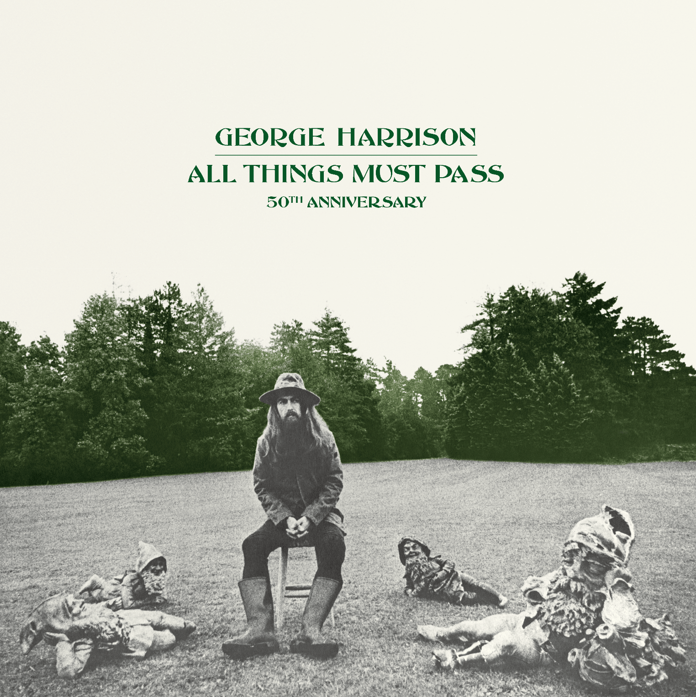

Music is my most important and prominent feature. I am consumed by the endless facets music can entail. Here's what I have been into lately:
Album of the Week
This album is a classic. It slipped through the cracks for a while, but I recently watched Weapons and the feature of Beware of Darkness got me amped up. The opening scene utilizing a 70's twangy rock song was a beautiful touch and set the tone for an unsettling and unconventional horror movie. Aside from that, I remember this album was one of my first exposures to slide guitar. The fluidity of the slide effect makes my ears melt. Whether it's your first time listening or a classic for you too, I recommend giving All Things Must Pass a vist.
Artist/Band of the Week
Japanese Shoegaze is a beast I'm attempting to face. There's a lot to uncover and even more sub-genres. However, lately, I've enjoyed listening to Tokyo Shoegazer. Whimsical and heavy guitar, that's all you need to know.
Song of the Week
I've been reminiscing on my study abroad semester, as it was just a year ago I arrived in Copenhagen eager minded and unable to fathom how small I truly am. I only discovered the essence of this city after leaving and reflecting on my experiences. Highly contemporary, soft, prestine, and grounded, Copenhagen felt lightyears ahead on many fronts. Their alternative music is moving towards genre defying ambient and experimental music. To satiate my craving to go back, I have been dabbling into the music coming out of here. A great start is Snuggle, if you're into slower meloncholic music. From my code to your ears: The Orchard.
At the moment, I am also into Starflyer 59, , French electronica soundtracks (The Virgin Suicides and Fantastic Planet), The Hollies, A Moon Shaped Pool, and Dean Blunt and affiliates.
Press my sweet hover button to check out more.